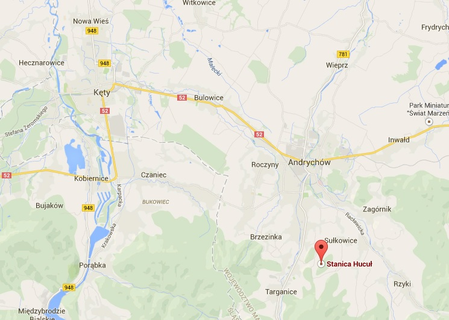

Strona główna >> Szkółki jeździeckie
Szkółki jeździeckie w Małopolsce
Wybierz powiat:

Powiat bocheński:
-
- Ośrodek Jeździecki PROGRES
- Proszówki 154
32-700 Bochnia - kom. 502 301 547
- ala@oj-progres.pl
- www.oj-progres.pl
Powiat brzeski
-
- Jeździecki Ośrodek Szkoleniowy NAD USZEWKĄ
- ul. Sąsiedzka 58 Mokrzyska
32-800 Brzesko - kom. 691 348 384
- uszewka@koniekielan.pl
Powiat gorlicki
-
- Stadnina Koni Huculskich Gładyszów Sp. z o.o.
- Regietów 28
38-315 Uście Gorlickie - tel./fax (18) 351 00 18
tel./fax (18) 351 00 97 - skh@onet.pl
- www.hucul.pl
Powiat krakowski
-
- Klub Jazdy Konnej Mustang
- ul. Nad Zalewem 15
30-235 Kraków - fax (12) 425 27 99
kom. 602 272 299 - stadnina@mustang.krakow.pl
- www.mustang.krakow.pl
-
- Klub Jazdy Konnej SZARY
- ul. Krakowska 131
32-091 Michałowice - kom. 601 407 316
fax (12) 442 41 30
kom. 693 101 221
kom. 691 350 250
kom. 607 797 030 - biuro@kjkszary.pl
- www.kjkszary.pl
-
- Klub Jeździecki FACIMIECH
- Facimiech 1
32-051 Wielkie Drogi - kom. 603 932 024
- facimiech@gmail.com
- www.kjkfacimiech.pl
-
- Ośrodek Jazdy Konnej PEGAZ
- ul. Karola Łowińskiego 1
31-752 Kraków - Nowa Huta - tel. (12) 425 80 88
kom. 604 059 389 - bogdan.german@ojkpegaz.pl
- www.ojkpegaz.pl
-
- Ośrodek Jazdy Konnej SANTOS
- ul. Leśna 2
32-080 Zabierzów - kom. 502 035 240
- milosz@classcom.pl
- www.ojk-santos.pl
-
- Ośrodek Jeździecki DIAGRAM
- ul. Podlesie 40
32-052 Radziszów - kom. 508 505 149
kom. 517 392 655 - www.diagram.net.pl
-
- Stadnina Koni Huculskich
- Nielepice 196
32-064 Rudawa - el. (12) 283 87 26
- stadnina@nielepice.com.pl
- www.nielepice.com.pl
Powiat limanowski
-
- APACZ
- Mszana Górna 428
34-733 Mszana Górna - kom. 788 967 761
kom. 668 537 813 - konieapacz@onet.pl
- www.konie-apacz.pl
-
- Stadnina Koni w Mordarce
- Mordarka 436
34-600 Limanowa - tel./fax (18) 337 22 23
tel./fax (18) 337 35 80
kom. 502 558 349 - stadnina@limanowa.net.pl
- www.limanowa.net.pl/10/stadnina-koni-w-mordarce
Powiat myślenicki
-
- RANCHO PCIM Stadnina Koni i Gospodarstwo Agroturystyczne
- Pcim 336
32-432 Pcim - tel. (12) 274 88 82
kom. 508 350 040 - eugeniusz.z@poczta.fm
- www.agroturystykakonna.pl
-
- Szkółka Jazdy Konnej HUCUŁ
- ul. Szkolna 8a
32-400 Myślenice - kom. 601 082 359
- konie@huculki.com.pl
- www.huculki.com.pl
Powiat nowosądecki
-
- Ośrodek Hipoterapii i Jeździectwa TARA
- Kamionka Wielka 377
33-334 Kamionka Wielka - kom. 662 059 944
kom. 783 128 344 - tara.konie@gmail.com
- www.konie-tara.pl
-
- Agro Ranczo
- Przysietnica 90
33-342 Barcice - tel. (18) 448 01 24
- agro_ranczo@o2.pl
- www.agro-ranczo.com
-
- Ośrodek Jazda Konna Tadeusz Maślanka
- Łomnickie 7
33-350 Piwniczna-Zdrój - tel. (18) 446 48 97
kom. 604 723 401 - ojkpiwniczna@interia.pl
- www.ojkpiwnicznazdroj.pl
-
- Stadnina Koni KOŃSKI OGRÓDEK
- Gródek nad Dunajcem
33-318 Gródek nad Dunajcem - kom. 696 028 712
kom. 696 028 705
tel. (18) 440 14 05 - www.konskiogrodek.pl
Powiat nowotarski
-
- Ranczo HAJNOS
- ul. Jana Pawła II 92
34-470 Czarny Dunajec - kom. 607 278 731
kom. 663 831 502 - ranczohajnos@op.pl
- www.ranczohajnos.pl
-
- Stadnina Koni DWORNA
- Rogoźnik 86
34-471 Ludźmierz - kom. 609 820 347
kom. 662 197 852 - stadnina-dworna@wp.pl
- www.stadnina-dworna.pl
-
- Stadnina Koni RAJD
- ul. Biała Woda 12a Jaworki
34-460 Szczawnica - tel. (18) 262 16 00
kom. 607 478 850 - biuro@stadninarajd.pl
- www.stadninarajd.pl
-
- Stajnia LIDER
- Wróblówka 100a
34-470 Czarny Dunajec - kom. 692 082 896
- maszmar@wp.pl
- www.stajnia-lider.pl
Powiat olkuski
-
- HIPPICA Zbigniew Kostrzewski
- ul. Hardego Krzywopłoty
32-310 Klucze - tel. (32) 647 16 70
tel. (32) 642 62 88
fax (32) 647 16 72 - hippica@hippica.pl
- www.hippica.pl
-
- STAJNIA TABUN Sławków
- ul. Burki 21
41-260 Sławków - kom. 501 151 726
kom. 516 302 765 - tabun@stajniatabun.pl
- www.stajniatabun.pl
Powiat oświęcimski
-
- Ośrodek Hipoterapeutyczno-Rehabilitacyjno-Jeździecki IKARION
- ul. Księżnej Ogińskiej 4
32-661 Bobrek - kom. 605 741 485
- ikarion@onet.pl
- www.ikarion.pl
Powiat proszowicki
-
- FARUK Ośrodek Jeździecki
- Niegardów-Kolonia 54
32-104 Koniusza - kom. 501 665 520
kom. 502 673 636 - bigaj@o2.pl
- www.konie-niegardow.pl
Powiat suski
-
- Stowarzyszenie Klub Sportowy BÓR Ośrodek Jazdy Konnej i Hipoterapii
- Toporzysko 454
34-240 Jordanów - tel./fax (18) 287 38 32
- biuro@toporzysko.pl
- www.toporzysko.pl/
Powiat tarnowski
-
- ROLESKI Ranch
- Stare Żukowice 1a
33-151 Nowa Jastrząbka - kom. 602 753 148
kom. 600 470 156
fax (14) 678 67 00 - www.roleskiranch.pl
Powiat tatrzański
-
- Górski Ośrodek Jeździecki Bogdan Pietrzyk
- ul. Słoneczna 17
34-530 Bukowina Tatrańska - tel. (18) 207 72 90
kom. 604 372 277 - www.bopietrzyk.republika.pl
-
- Osada na Brzyzku
- ul. Kościuszki 11k
34-520 Poronin - kom. 668 550 910
- monikagut82@gmail.com
- www.osadanabrzyzku.pl
Powiat wadowicki
-
- Stadnina Koni JOWISZ
- ul. Wojska Polskiego 17
34-100 Wadowice - kom. 514 766 773
- kontakt@stadninajowisz.pl
- www.stadninajowisz.pl
-
- Stajnia NA ZADZIALE
- Leńcze 259
34-142 Leńcze - kom. 697 140 604
- kontakt@nazadziale.pl
- www.nazadziale.pl/
Powiat wielicki
-
- Nauka Jazdy Konnej Tadeusz Czajka
- ul. Targowa 5
32-005 Niepołomice - kom. 603 642 725
- kjk@konieczajka.pl
- www.konieczajka.pl
-
- Ośrodek Jazdy Konnej PONY SPORT
- Siercza 1
32-020 Wieliczka - kom. 607 681 666
kom. 781 681 686
kom. 697 681 686 - biuro@ponysport.pl
- www.ponysport.pl
-
- Stadnina Koni WIŚLANY ZAKĄTEK
- Wola Zabierzowska 154
32-007 Zabierzów Bocheński - kom. 509 987 960
kom. 502 934 954 - biuro@wislanyzakatek.pl
- www.wislanyzakatek.pl/
-
- Stadnina Koni ZŁOTY DUKAT
- Rupniów 157
34-652 Nowe Rybie - kom. 609 448 442
- kaimm@interia.pl
- www.zloty-dukat.com/